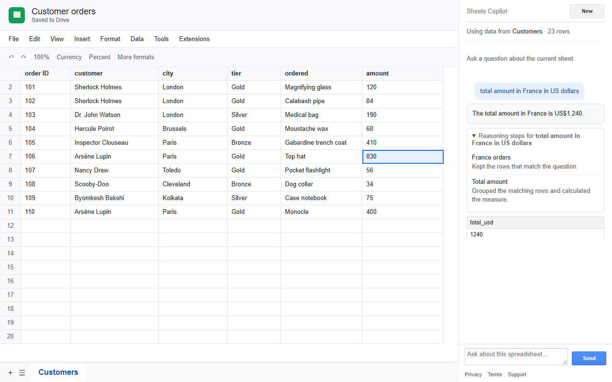

→

2. Ask about the current workbookPrereasoner reads visible, non-empty tabs only. It does not edit cells.
SPREADSHEETS.CURRENTONLY
Ask questions about the current Google Sheet, inspect the reasoning, and return to previous conversations.


spreadsheets.currentonlyRead only the spreadsheet where the add-on is used.script.container.uiAdd the Extensions menu, sidebar, and conversation dialog.script.external_requestCall the Prereasoner and Firebase Authentication endpoints.openid · email · profileIdentify the signed-in user and retrieve that user’s conversations.